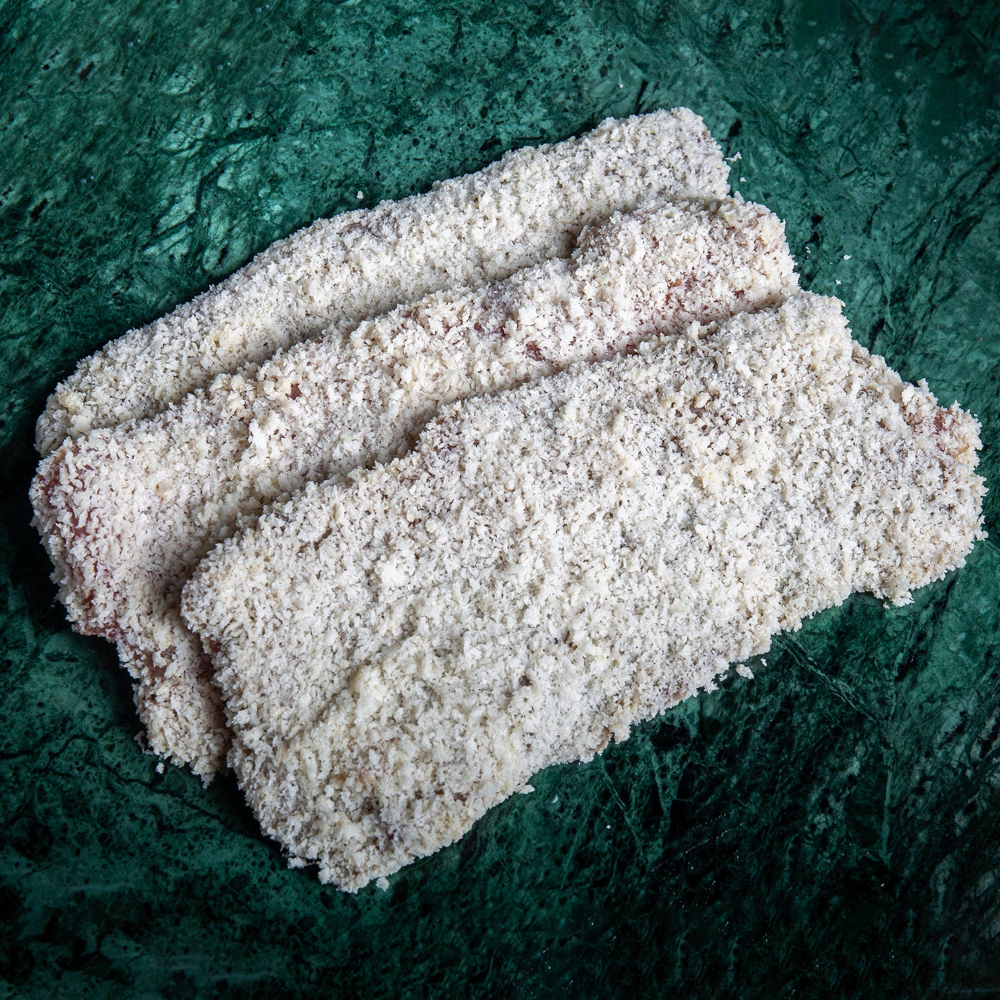
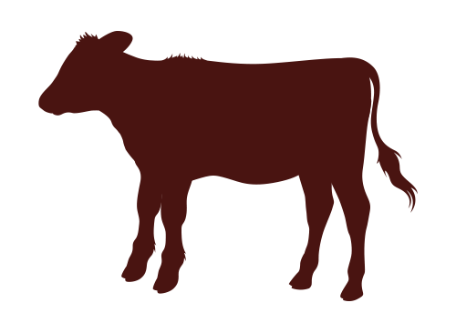

Delicate milk-fed veal for refined dishes and classic cooking.
Delicate milk-fed veal for refined dishes and classic cooking. Browse the selection below and contact us for product availability, quantities and enquiries.
Make an Enquiry